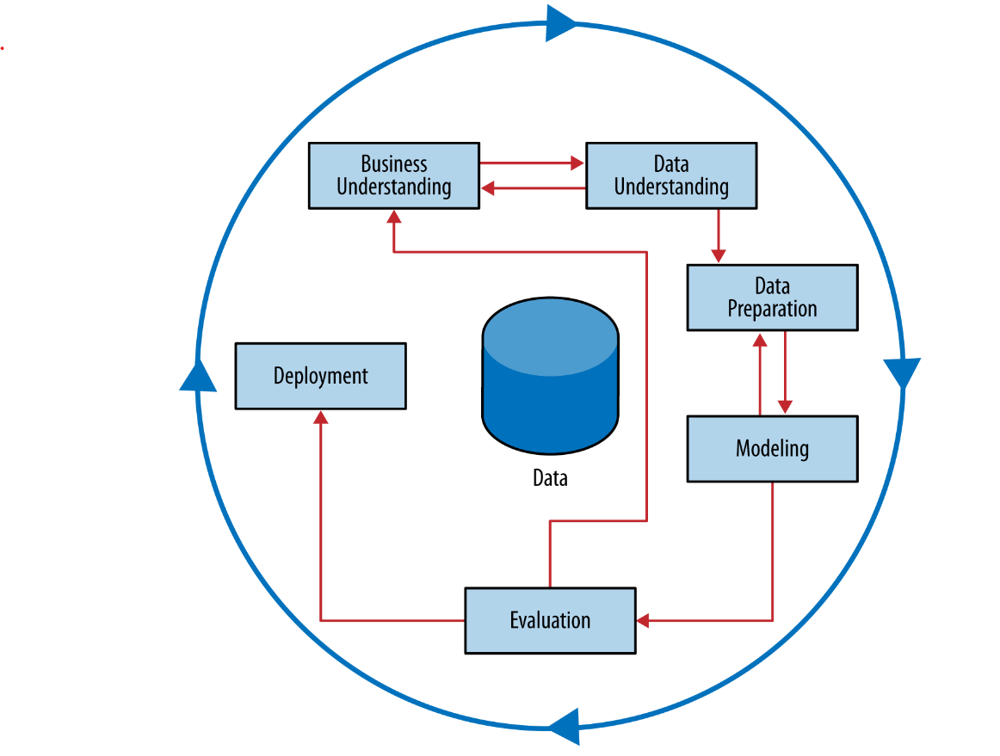

14 Data Science for Business
ML is generally associated with making predictions at the individual level (inferences without attempting to understand the entire population), while statistics is used for inference, emphasizing the analysis of a sample from the population to draw conclusions about the population.
14.1 ML process
- What is the goal of the analysis? (It is never to maximize accuracy.)
- Think in context: What are the baseline benefits, and is it worth trying to improve them? (Understand the time cost of complex systems.)
- Expected value framework:
- Decompose the problem into subtasks that we think we can solve, usually starting with existing tools.
- Calculate expected benefit
- Estimate each probabilities and values using data (statistics or ml, business values often need to be acquired from other sources)
- We may discover knowledge that will help us to solve the problem we had set out to solve, or we may discover something unexpected that leads us to other important successes
- Acknowledge the biases
- Plan a way to evaluate/measure the benefits of the system (e.g., offline metrics like A/B tests / cost and benefit framework and online metrics like accuracy).
- Communicate the results using explainable methods.
- Ethical considerations: Be careful of biased data used to test the model, as the model will likely exacerbate those biases.
14.1.1 Expected value framework:

- probability of response * (response benefit - expenses) - (1 - probability of response) * (benefit of not responding (zero) - the cost of the solicitation)
- probability of response * (response benefit - expenses) - (1 - probability of response) * (benefit of not responding (zero) - the cost of the solicitation) > 0
- probability of response * (response benefit - expenses) > (1 - probability of response) * (benefit of not responding (zero) - the cost of the solicitation)
- probability of response > 1 / ((benefit of not responding (zero) - the cost of the solicitation) + (response benefit - expenses))
With these example values, we should target the consumer as long as the estimated probability of responding is greater than 1 / ((benefit of not responding (zero) - the cost of the solicitation) + (response benefit - expenses))%.

A common way of expressing expected profit is to factor out the probabilities of seeing each class, often referred to as the class priors. The class priors, p(p) and p(n), specify the likelihood of seeing positive and negative instances, respectively. Factoring these out allows us to separate the influence of class imbalance from the fundamental predictive power of the model, as we will discuss in more detail in Chapter 8. 

- It is important to make sure the signs of quantities in the costbenefit matrix are consistent. In this book we take benefits to be positive and costs to be negative. In many data mining studies, the focus is on minimizing cost rather than maximizing profit, so the signs are reversed. Mathematically, there is no difference. However, it is important to pick one view and be consistent.
- An easy mistake in formulating cost-benefit matrices is to “double count” by putting a benefit in one cell and a negative cost for the same thing in another cell (or vice versa). A useful practical test is to compute the benefit improvement for changing the decision on an example test instance.
For example, say you’ve built a model to predict which accounts have been defrauded. You’ve determined that a fraud case costs $1,000 on average. If you decide that the benefit of catching fraud is therefore +$1,000/case on average, and the cost of missing fraud is -$1,000/case, then what would be the improvement in benefit for catching a case of fraud? You would calculate: b( Y,p ) - b(N,p) = $1000 - (-$1000) = $2000 But intuitively you know that this improvement should only be about $1,000, so this error indicates double counting. The solution is to specify either that the benefit of catching fraud is $1,000 or that the cost of missing fraud is -$1,000, but not both. One should be zero.
14.2 Include costs of aquiring data
Different data sources may have different associated costs, and careful evaluation may show which can be chosen to maximize the return on investment.
14.3 CRISP-DM
Extracting useful knowledge from data to solve business problems can be treated systematically by following a process with reasonably well-defined stages.

14.4 ML list of data science tasks and tools
| Tasks | Description | Tools |
|---|---|---|
| Prediction | Estimate or predict, for each individual, which of a (small) set of classes this individual belongs to or the numerical value of some variable for that individual | Supervised: Classification/Regression models |
| Causal modeling | Understand what events or actions actually influence other | Supervised: A/B tests |
| Similarity matching | Identify similar individuals based on data known about them | Generally unsupervised: clustering (also Classification, regression) |
| Clustering | Group individuals in a population together by their similarity, but not driven by any specific purpose / Exploratory analysis | Unsupervised: K-means, Hierarchical Clustering |
| Co-occurrence grouping | Find associations between entities based on transactions involving them: e.g., What items are commonly purchased together? While clustering looks at similarity between objects based on the objects’ attributes, co-occurrence grouping considers similarity of objects based on their appearing together in transactions. | Unsupervised: cluster algorithms, Hidden Markov Models |
| Profiling | characterize the typical behavior of an individual, group, or population e.g. “What is the typical cell phone usage of this customer segment?” | Generally Unsupervised: Cluster analysis, Anomalies detection; (also NLP, descriptive statistics) |
14.5 Data Science process questions
Business and Data Understanding
- What exactly is the business problem to be solved?
- Is the data science solution formulated appropriately to solve this business problem? NB: sometimes we have to make judicious approximations.
- What business entity does an instance/example correspond to?
- the problem a supervised or unsupervised problem? — If supervised — Is a target variable defined? — If so, is it defined precisely? — Think about the values it can take.
- Are the attributes defined precisely? — Think about the values they can take.
- For supervised problems: will modeling this target variable improve the stated business problem? An important subproblem? If the latter, is the rest of the business problem addressed?
- Does framing the problem in terms of expected value help to structure the subtasks that need to be solved?
- If unsupervised, is there an “exploratory data analysis” path well defined? (That is, where is the analysis going?)
Data Preparation
- Will it be practical to get values for attributes and create feature vectors, and put them into a single table?
- If not, is an alternative data format defined clearly and precisely? Is this taken into account in the later stages of the project? (Many of the later methods/techniques assume the dataset is in feature vector format.)
- If the modeling will be supervised, is the target variable well defined? Is it clear how to get values for the target variable (for training and testing) and put them into the table?
- How exactly will the values for the target variable be acquired? Are there any costs involved? If so, are the costs taken into account in the proposal?
- Are the data being drawn from the similar population to which the model will be applied? If there are discrepancies, are the selection biases noted clearly? Is there a plan for how to compensate for them?
Modeling
- Is the choice of model appropriate for the choice of target variable?
- Classification, class probability estimation, ranking, regression, clustering, etc.
- Does the model/modeling technique meet the other requirements of the task?
- Generalization performance, comprehensibility, speed of learning, speed of application, amount of data required, type of data, missing values?
- Is the choice of modeling technique compatible with prior knowledge of problem (e.g., is a linear model being proposed for a definitely nonlinear problem)?
- Should various models be tried and compared (in evaluation)?
- For clustering, is there a similarity metric defined? Does it make sense for the business problem?
Evaluation and Deployment
- Is there a plan for domain-knowledge validation?
- Will domain experts or stakeholders want to vet the model before deployment? If so, will the model be in a form they can understand?
- Is the evaluation setup and metric appropriate for the business task? Recall the original formulation.
- Are business costs and benefits taken into account?
- For classification, how is a classification threshold chosen?
- Are probability estimates used directly?
- Is ranking more appropriate (e.g., for a fixed budget)?
- For regression, how will you evaluate the quality of numeric predictions? Why is this the right way in the context of the problem?
- Does the evaluation use holdout data?
- Cross-validation is one technique.
- Against what baselines will the results be compared?
- Why do these make sense in the context of the actual problem to be solved?
- Is there a plan to evaluate the baseline methods objectively as well?
- For clustering, how will the clustering be understood?
- Will deployment as planned actually (best) address the stated business problem?
- If the project expense has to be justified to stake
14.6 Proposal Example
- Explain the problem.
- Define the goal (pay attention to the KPI used and report if the problem has slighlty change due to data limitations).
- Outline the approach to achieving the goal:
- Specify the data to be used/collected.
- What attributes are going to be used
- Justify the choice of model(s). Think about the comprehensibility of the model to stakeholders
- Document the assumptions made during modeling.
- Describe the method for testing model performance.
- If pilot study already has been conducted and learning curves having been produced on data samples report and estimate of model performance
- Identify individuals responsible for peer reviewing the project (keep in mind that favour a simple model to allow other people to understand the model).
- Detail the strategy for tracking model performance.
14.7 DataBricks
Create a notebook in databricks